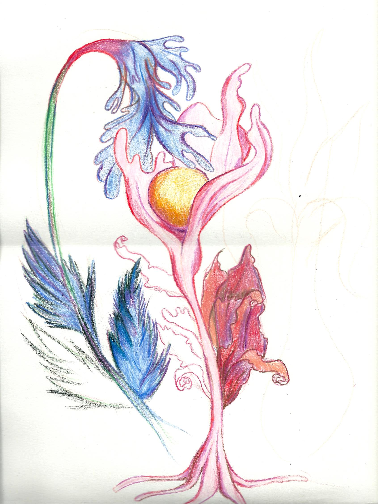
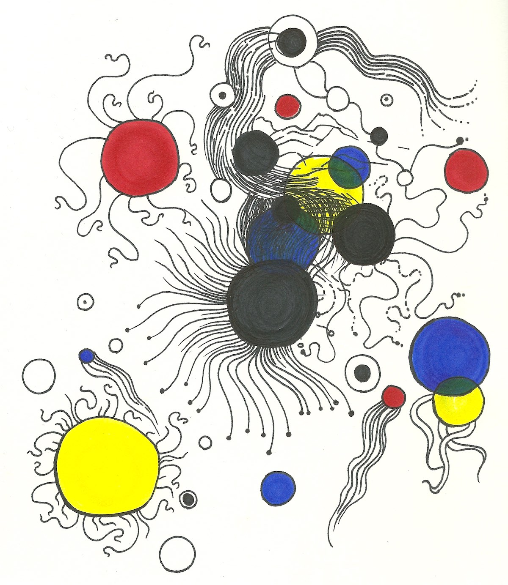
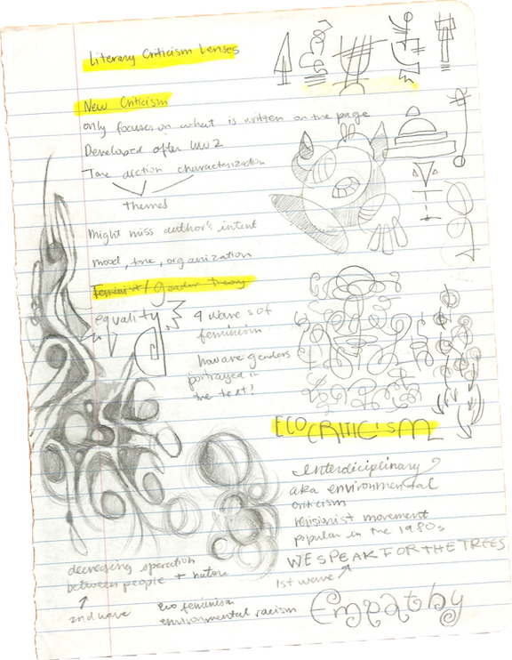
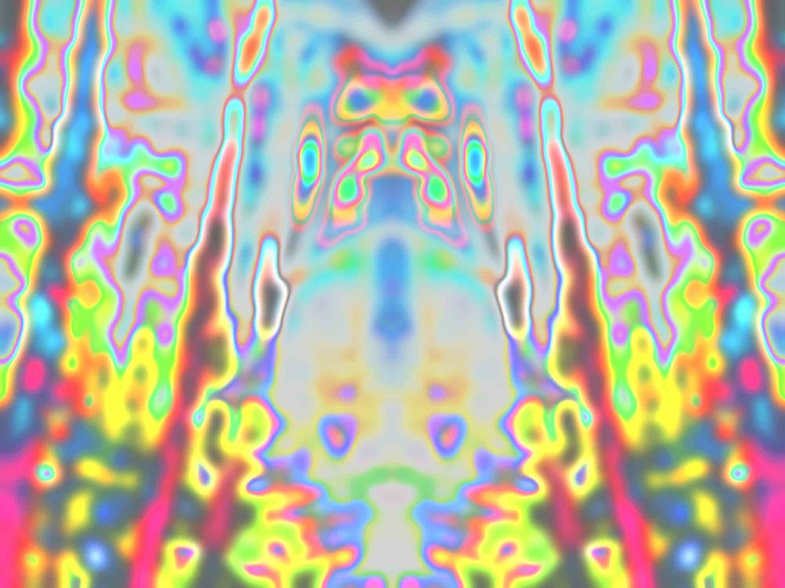
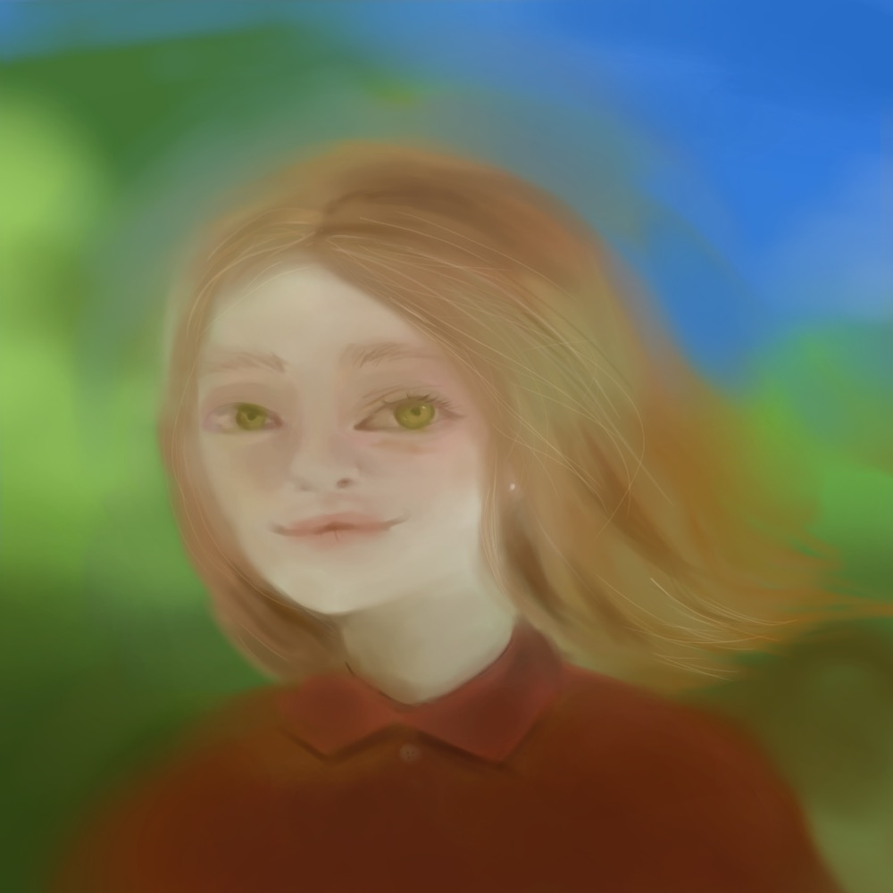
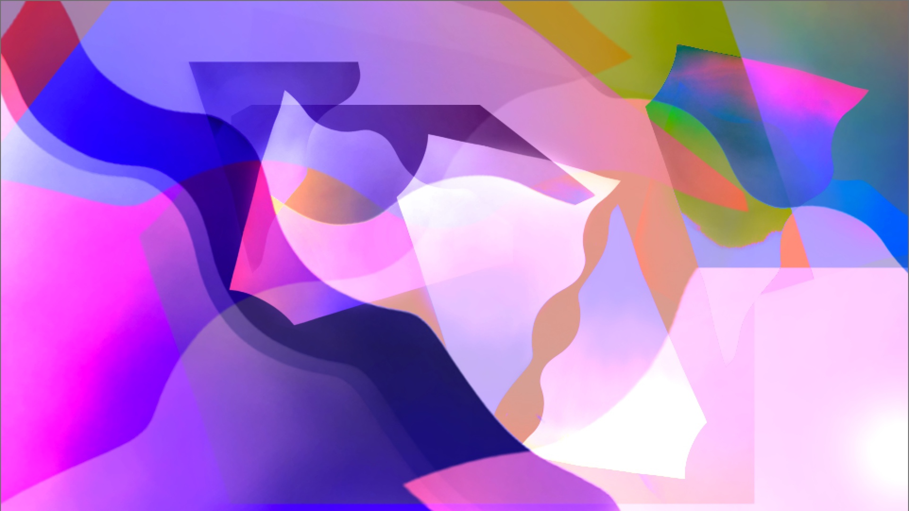
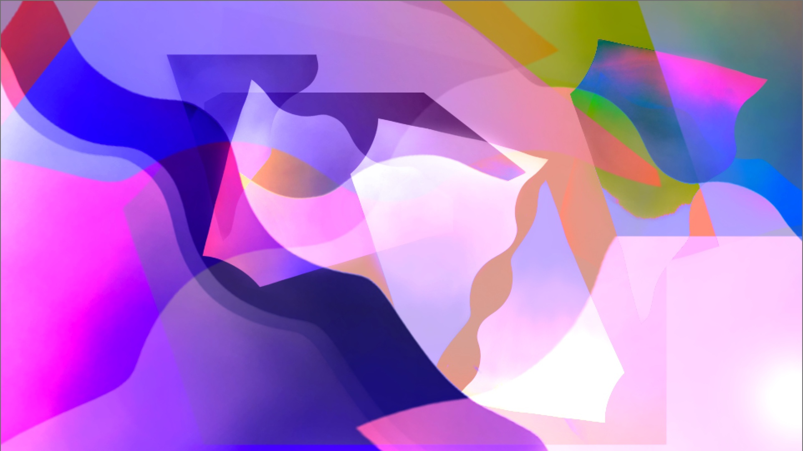
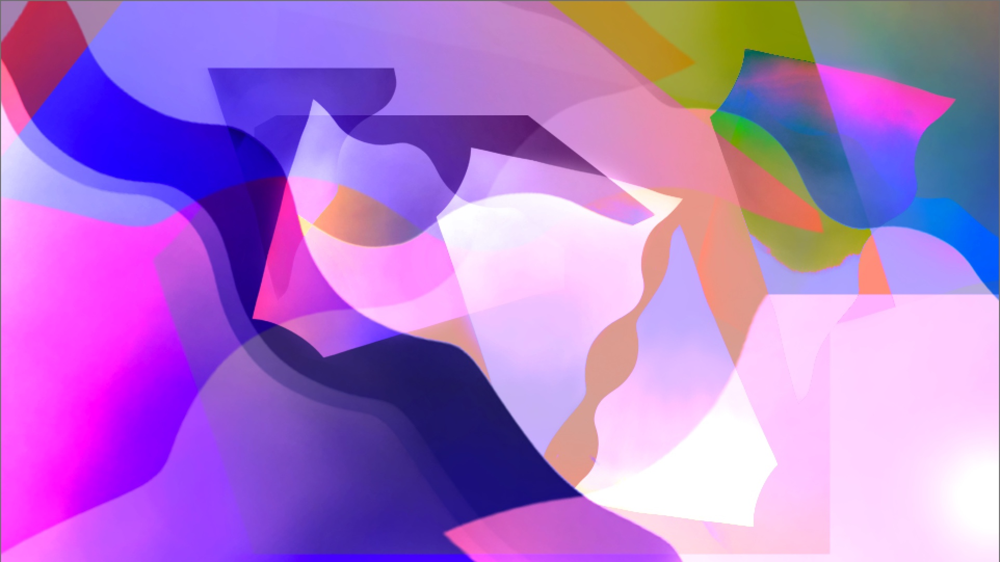
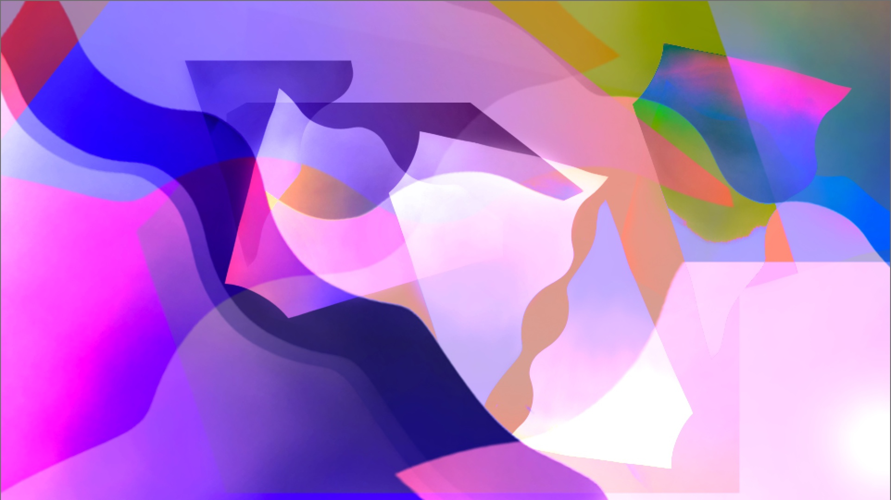

sketches & doodles



photographic experiments

 


digital paintings and drawings
a digital window to the inside of my mind
sketches & doodles
photographic experiments

digital paintings and drawings